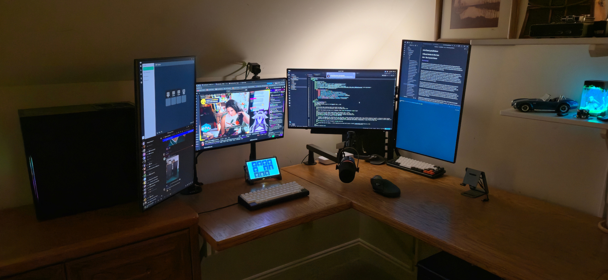

A peek under the hood...
"BLACKBOX" - Custom build, primary desktop (writing, streaming, etc...)
- Operating System - Ubuntu 26.04 LTS "Resolute Raccoon"
- Motherboard - ASUS TUF Gaming B850M-Plus µATX
- CPU - AMD Ryzen 7 9700X (8 cores, 16 threads), open-air cooling
- RAM - 64 GB, Crucial PRO DDR5-6000 (4 x 16 GB)
- GPU - MSI Nvidia RTX 4070 Ti Ventus 12 GB, open-air cooling
- System Drive - 1.0 TB, Samsung SSD 9100 PRO NVMe
- Data Drive - 4.0 TB, Crucial P3 NVMe
- Ethernet - Onboard RealTek RTL8125 2.5GbE
- Power Supply - EVGA Supernova 750W, 80+ Gold
- Case - Silverstone Tek "Temjin" TJ08B-E
Peripherals (and other equipment)
- Headphones - BeyerDynamic TYGR 300 R open-back
- Microphone - Shure MV7+; mounted on iXtech "Lizard" low-profile swivel arm
- Camera - AIDA HD-100A, Arducam CS-Mount 6mm manual focus lens, generic 4K30 USB 3.0 capture card; mounted on Pictron LS11 extendable arm
- Streamdeck - TouchPortal on Raspberry Pi 4 w/ Android 13, PoE+ Hat, and 7" Eleclabs touchscreen display
- Keyboards
- PRIMARY - KeyCult Zero Custom HHKB layout (60%), Kailh Dark Chocolate switches (creamy 55g linear, full POM pre-lubed) w/ custom Yuzu PBT keycaps (Cherry profile)
- System76 Launch (75%), Kailh Dark Chocolate switches (creamy 55g linear, full POM pre-lubed) w/ System76 double-shot PBT shine-through keycaps (Tai-Hao "Bobo" profile)
- System76 Launch Lite (65%), Kailh Dark Chocolate switches (creamy 55g linear, full POM pre-lubed) w/ custom Yuzu PBT keycaps (Cherry profile)
- HHKB Studio (60%), Kailh Dark Chocolate switches (creamy 55g linear, full POM pre-lubed) w/ HHKB Snow keycaps set (Cherry profile), integrated TrackPoint mouse pointer w/ red nub
- TEX Shura DIY, Kailh Ice Cream Pro Switches (creamy 45g linear, full POM pre-lubed, no extended stem), factory keycaps (uniform "ADA" profile), integrated TrackPoint mouse pointer w/ black nub
- Unicomp Mini-M (TKL), authentic buckling spring mechanisms (tactile and LOUD), factory keycaps (uniform "curved" profile)
- Mouse - Elecom Huge Plus trackball
- Consoles
- Display - 4x Dell Professional 24 (P2425H)
- Networking - Unifi Switch Flex 2.5G 8-port (no PoE)

Go home